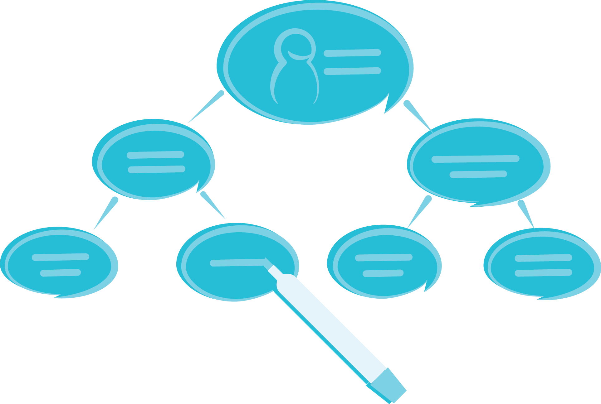
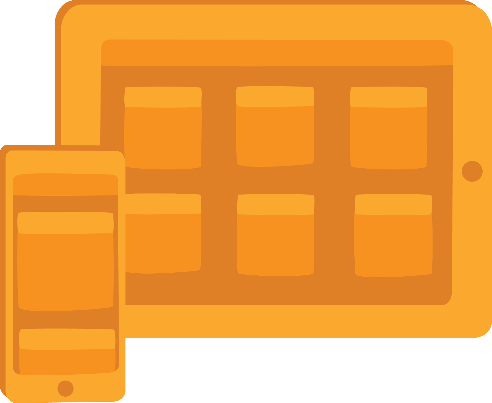
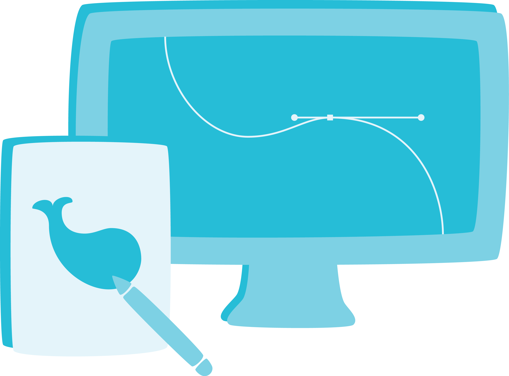
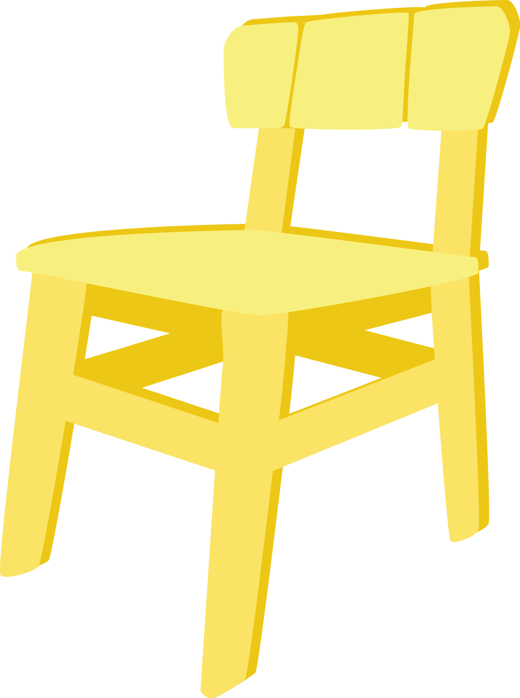

{{ content }}
Human-centered design
Human-centered design is an approach focused on solving the needs and wants of a real world people. The human-centered design process is comprised of user research, prototyping, and evaluation.
Tools
Engineering design
Engineering design is the process through which engineers create functional products. Some of its chief concerns are functionality, efficiency, maintainability, availability, and testability.
Tools
- Mechanical: 3D Printing, Lasercutting, Machining
- Machining: Lathe, Mill, Drill, Bandsaw, CNC
Digital product design
Digital product design is an umbrella term for user interface design, interaction design, and visual design. It focuses on making easy-to-use consumer applications, like web and mobile apps.
Tools
- Wireframing: Illustrator, Photoshop, Sketch
- Prototyping: Keynote, Invision, Flinto, Pixate, Origami
- Prototyping (programming): Framer.js, HTML/CSS/JS
Environmental design

Environmental design includes architecture, urban planning, and landscape architecture. Each of these fields studies and designs our built environment with respect to social context and aesthetic form.
Tools
- 3D modeling: Rhino, SketchUp
- Rendering: V-Ray, Photoshop
- Orthographic projection drawings: AutoCAD
- Parametric programming/design: Grasshopper, Kangaroo
Visual design
Visual design, also known as graphic design or communication design, is a form of problem-solving, in which ideas and messages are communicated through typography, composition, and image.
Tools
- Illustration & Vectorization: Illustrator, Sketch
- Layout: InDesign
- Motion/Video: AfterEffects
- Photo processing: Photoshop, Lightroom
- Understanding of typography and composition
Physical product design
Physical product design, which is related to but not identical to industrial design, is the creation of a tangible product intended to be sold to consumers. It is similar to digital product design.
Tools
- 3D modeling
- Solidworks
- Fusion360
- Autodesk Inventor
- Prototyping: 3D printing, Lasercutting
- Machining: Lathe, Mill, Drill, Bandsaw, CNC
Design in animation and computer graphics

Design finds its place in animation and computer graphics through storytelling and the visual experience that these disciplines provide to the viewer.
Tools
- Animation: Maya
- Programming: C++
- Understanding of story, character, world-building
Game design
Game design is the creation of both physical and virtual games. It designs user interaction as well as aesthetics to create games for a particular purposes such as education, play, and health.
Tools
- Game development: Unity, mobile development
- Visuals: Adobe Creative Suite
- Recommended backgrounds: programming, art
- Understanding of story, character, world-building